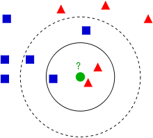

K-Nearest Neighbors (KNN) Classifier
What are KNN Classifiers
KNN is a method to classify a point based upon which k points are closest to it. KNN will essentially poll the other points around it to determine what it should be classified as. Depending on the implementation it can either decide to be classified as whichever class the majority is or be it can be classified as parts of multiple classes. Implementations can also include to use the distance away as a factor as well so that a point closer to the unknown point will influence the decision more than a point further away. A visual example from
Wikipedia illustrates how general KNN's works:

This shows how you would try and classify the green point. If you only took it's 3 nearest neighbors then you would most likely classify it as red. But if you took it's 5 nearest neighbors then you would most likely classify it as blue.
It is best to work with your data to find the optimal though it is recommended to choose a K less than 10. If you can't decide 4 is usually a good choice.
About the implementation
The following are examples from Collective Intelligence. The function not shown is the getdistances function. This function simply takes the distance between the points and returns a sorted list of points that are closest to the current point. The first function is an unweighted KNN while the second one is a weighted KNN:
def knnestimate(data,vec1,k=3):
# Get sorted distances
dlist=getdistances(data,vec1)
avg=0.0
# Take the average of the top k results
for i in range(k):
idx=dlist[i][1]
avg+=data[idx]['result']
avg=avg/k
return avg
def weightedknn(data,vec1,k=5,weightf=gaussian):
# Get distances
dlist=getdistances(data,vec1)
avg=0.0
totalweight=0.0
# Get weighted average
for i in range(k):
dist=dlist[i][0]
idx=dlist[i][1]
weight=weightf(dist)
avg+=weight*data[idx]['result']
totalweight+=weight
avg=avg/totalweight
return avg